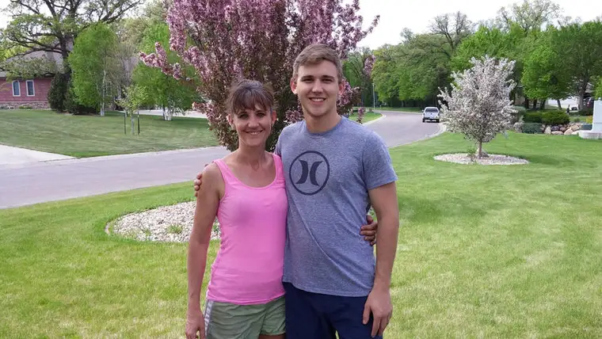
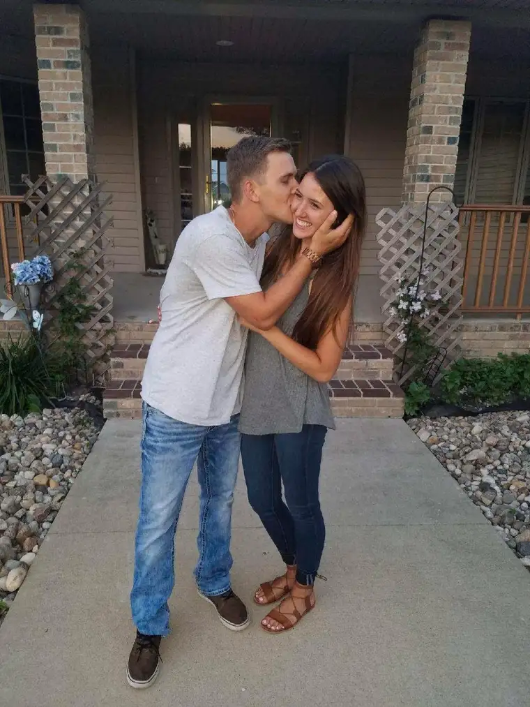

WEST FARGO — When the call came the evening of June 28, Sarah Fisher was sleeping in bed. Her cellphone — the only number her son had for her in his contacts — sat quietly in its charger.
While emergency workers rushed to the crash site, felt for Cameron Bolton’s pulse and gently lifted the broken body of her son into the ambulance, Fisher rested, unaware her life had changed.
“The accident took place at 8:47; I didn’t get the call until like 11:10,” Fisher says.
Hearing the Cass County Sheriff explain that her oldest son, 22, had been in a crash, Fisher’s mind went to something manageable — a broken bone, perhaps.
But in a follow-up call to Sanford Medical Center, she was directed to a trauma surgeon, who happened to be her neighbor’s daughter.
Fisher quickly learned of the seriousness of the crash south of Mapleton. The North Dakota Highway Patrol would later report Bolton was a passenger in a vehicle that entered an intersection without yielding and was struck by a van carrying a basketball team.
She heard about two vehicles colliding on a warm summer’s night, a rollover and her son’s grave condition.
No stranger to the medical field, Fisher works as a certified nursing assistant at the very facility where her son laid on a hospital bed, cooled by machines to prevent brain swelling. For the next several days, Bolton’s hospital room was filled with loved ones, prayers, tears and crosses of every size and design. Fisher requested the crosses for comfort.
“People were coming in droves, and not one cross was the same — kind of like people,” she says. “Some little kids took sticks and twined them together because they didn’t have a cross.”
When it became clear God wasn’t going to answer their prayers with Bolton’s revival, the discussion turned to organ donation.
While Bolton was an organ donor, something was switched when he’d renewed his driver’s license, so the family was faced with the decision. At a crucial moment, a rainbow spread across the rainless sky, and they just knew.
“I went running out of the room — I probably scared everyone, saying, ‘God is here! Cameron’s here!'” Fisher recalls, noting that a short time later, the clouds formed in a way that “looked like a man walking to heaven.”
First sign

Fisher says there have been multiple signs — miracles — offering the family comfort and confirmation in their decision to donate Cameron’s organs through LifeSource. While most of his viable organs went to women, she says her son’s heart went to another young man.
“I put a photo up on Facebook of Cameron’s work boots and wrote, ’30-year-old man, whomever you are, you have some big boots to fill.'”
On Aug. 10, Harmony Alm, 24, the oldest of the three Bolton children, which also includes younger brother Preston, married her sweetheart, Tyler.
“I kept praying before the wedding, ‘Just show me you’re there (Cameron),'” Alm says, mentioning a rainbow reflection spotted on the ground — an effect of the sun beaming through a beveled window. “He showed us his appearance during the ceremony, too. There was a little (monarch) butterfly that flew by.”
Perhaps the most poignant signs have come through Ezra, Alm’s 2-year-old daughter. About 30 minutes after Bolton was pronounced dead, Ezra awoke from her nap at day care and, looking up at the doorway, smiled, saying, “Yes, Uncle C.C., he’s OK,” she says, noting Ezra’s nickname for her uncle, Cameron Christopher.
“She’s a light in our world right now,” Alm says of her daughter, adding that the morning of the crash, Bolton had stopped by for lunch, taking extra time to be with his little niece.
“Cameron was the kind of guy who would take the shirt off his back for someone who was cold, or give a burger to someone on the street,” Alm says. “He always put others first and would never leave the room without hugging or a good handshake. I’ll never forget those hugs.”
‘Best year of his life’
The morning of the crash, Mary Gray, a 21-year-old college student from Nevis, Minn., rose at 6:30 a.m. to the typical daily phone call from Bolton, her boyfriend. “To see his cute picture on my phone always brought me so much joy,” she says.
She still remembers their first date, how he’d tried to kiss her. “I backed away, telling him, ‘On the cheek if you want,’ and he said, ‘How about if I walk you up to the door?'”
Gray continues, “I loved him deeply — for his faults and imperfections, every single part of him — and my heart is shattered.”
She clings to her Catholic faith for comfort, she says. “In moments like this, at times, all you feel is the hurt and heartache, but I’ve just tried to consistently bring that to God.”
A child of divorce, Gray says she learned early that suffering can either “tear you apart or make you stronger and more purified.”
“This last year, Cameron had so many things taken away from him. He had so many plans that didn’t work out,” she says, seeing these losses now as a way God was preparing him. “It’s also the year he’s been closest to God. He told me multiple times it was the best year of his life.”
Though painful, she says losing him has taught her how present God is in suffering.
“He never causes it, but he sits there with us and holds us in it; he wants us to bring our suffering to him, so that every suffering becomes a huge prayer,” she says.
At Bolton’s July 9 funeral at Prairie Heights Community Church, Fisher says more than 700 people gathered to pay tribute, and at least one person accepted Christ for the first time.
“We had the song, ‘Jealous of the Angels,'” Fisher says. “It helps us see it’s not our place to question God’s plan. Where Cameron’s at, that’s where we all want to be someday.”
But it’s not the usual order of things, she acknowledges, letting tears freely fall.
“You have all these questions as a human … but I don’t have anger toward God,” she says. “I know Cameron is like, ‘Way to go, Mom. You’re telling people my story, and some will go to heaven because of it.'”
The organ donations have brought her some healing, as well.
“There are four families that, while we were crying, they were rejoicing,” she says.
She’s learned that Bolton’s heart, one kidney and his liver were successfully transplanted in separate recipients, and two people benefited from his corneas. In addition, she was told her son’s tissues, bones and tendons could end up helping 400 to 500 recipients. For now, they’re stored and will be used when needed.
And when other signs appear — like feathers, rainbows and butterflies — Fisher says she just smiles and thanks God.
“We need those visual signs,” she says. “When you have faith, you just have that confidence God isn’t going to leave you. He promised he won’t.”
[For the sake of having a repository for my newspaper columns and articles, I reprint them here, with permission, a week after their run date. The preceding ran in The Forum newspaper on Aug. 25, 2018.]